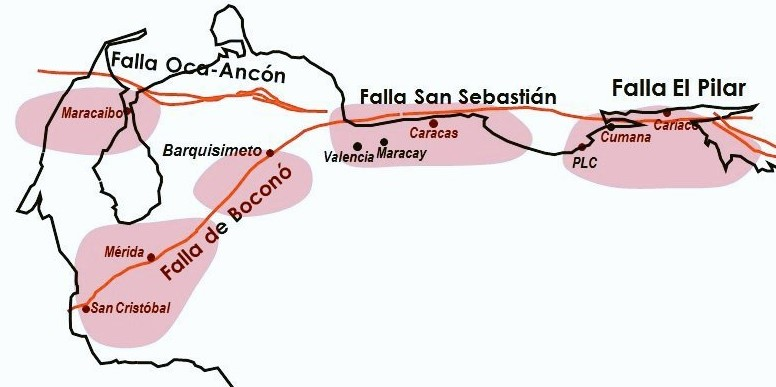

La estructura tectónica más importante de los Andes venezolanos.
Esquema de Movimiento
Contexto Tectónico Regional
| Ventaja Geomorfológica | Amenaza Sísmica |
|---|---|
| Creó los valles fértiles y lagunas que permiten la agricultura y el asentamiento de ciudades andinas. | Es la mayor amenaza sísmica del occidente. Causante del Terremoto de 1894. |
💬 Debate Social
✍️ OpinarCargando opiniones...